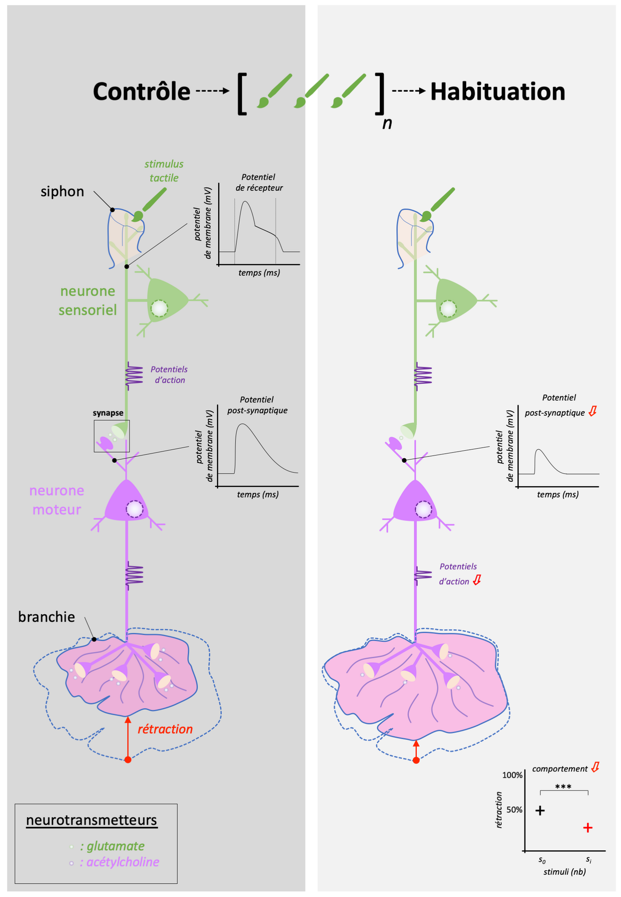
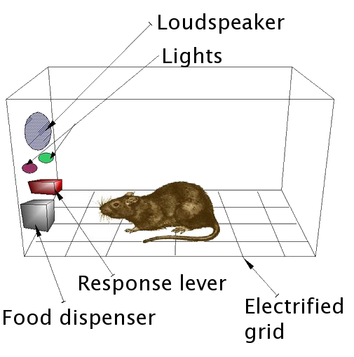
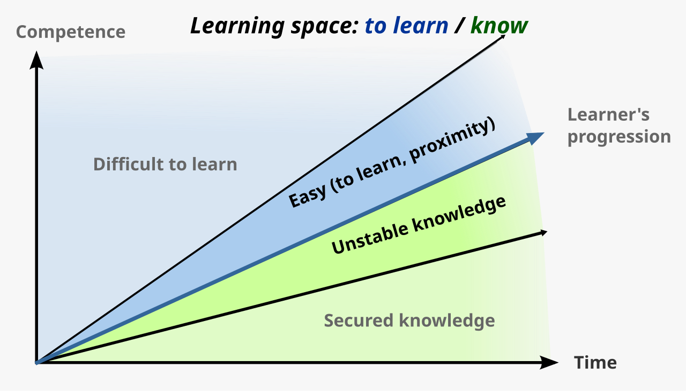

Learning
Almost everything you do — the language you speak, the fear that grips you at a dentist's drill, the pull of a phone buzzing in your pocket — was learned. Learning is the process by which experience produces a lasting change in what an organism knows or does, and psychologists have spent more than a century mapping how it works. This chapter follows that story from Pavlov's salivating dogs to Skinner's levers to Bandura's inflatable clown, building the vocabulary you need to see conditioning at work in classrooms, casinos, and your own habits. Master these few mechanisms and a great deal of human and animal behavior stops looking mysterious.
By the end of this chapter you can
- Define learning and distinguish it from reflex, instinct, maturation, and fatigue.
- Contrast associative learning with non-associative forms such as habituation and sensitization.
- Diagram classical conditioning using the US, UR, CS, and CR, and describe acquisition, extinction, spontaneous recovery, generalization, and discrimination.
- Explain Thorndike's law of effect and how Skinner turned it into operant conditioning.
- Tell reinforcement from punishment and positive from negative, and explain why negative reinforcement is not punishment.
- Describe shaping by successive approximations.
- Compare the four schedules of reinforcement and the response pattern each produces.
- Summarize Bandura's Bobo doll study and the four processes of observational learning.
Section 1What learning is

A working definition
Psychologists define learning as a relatively permanent change in behavior or knowledge that results from experience. Each part of that sentence earns its place. The change must actually last — a momentary shift does not count. And it must come from experience, which rules out three look-alikes: changes from maturation (an infant walks because the nervous system matured, not because it practiced), reflexes and instincts (you were born blinking and blinking is not learned), and temporary states like fatigue or drugs. Learning is what is left when you subtract growing up, being born knowing, and being tired.
Associative learning
The engine of this chapter is associative learning — forming a mental link between two events so that one comes to signal or produce the other. It takes two great forms. In classical conditioning an organism links two stimuli, so that a signal comes to predict an event. In operant conditioning an organism links a behavior to its consequence, so that rewards and penalties reshape what it does. Nearly all of the deliberate training humans do to animals, children, and themselves runs on one of these two rails.
The other kinds
Not all learning is associative. The simplest form, non-associative learning, involves just one repeated stimulus. In habituation a response shrinks with repetition — you stop hearing the hum of the refrigerator minutes after you enter the kitchen. In sensitization a response grows — after a startling clap of thunder, small noises make you jump. Beyond these sit richer forms, including observational learning (Section 5) and the cognitive, latent learning that early behaviorists underrated. The behaviorist John B. Watson wanted psychology to study only what could be seen; the field later added the mind back in, but the observable mechanisms in this chapter remain its bedrock.
| Kind of learning | What is linked or changed | Everyday example |
|---|---|---|
| Habituation | Response to one repeated stimulus decreases | You stop noticing a ticking clock |
| Sensitization | Response to one repeated stimulus increases | Jumpier at every creak after a scare |
| Classical conditioning | Two stimuli become linked | Mouth waters at a pizza-shop jingle |
| Operant conditioning | A behavior is linked to its consequence | Studying hard because it earns good grades |
| Observational learning | Behavior copied from a model | A toddler mimics a parent's phone habits |
- Learning is a lasting change in behavior or knowledge that comes from experience, not maturation, reflex, or fatigue.
- Associative learning links events: classical conditioning (two stimuli) and operant conditioning (behavior and consequence).
- Non-associative learning involves one repeated stimulus: habituation (response falls) and sensitization (response rises).
- Observational and cognitive learning show that learning is more than simple stimulus–response.
Section 2Classical conditioning

Pavlov's accidental discovery
Ivan Pavlov was a Russian physiologist studying digestion — work that won him a Nobel Prize in 1904 — when his dogs interrupted the plan. They began salivating not just at food but at the sight of the lab assistant who fed them and even at the sound of approaching footsteps, before any food appeared. Rather than dismiss this "psychic secretion," Pavlov built a career on it, pairing an arbitrary signal such as a metronome, buzzer, or tone with meat powder and measuring, drop by drop, how the dogs came to anticipate the meal.
The four parts: US, UR, CS, CR
The logic is simple once the four pieces are named. Food placed in the mouth automatically triggers salivation: the food is the unconditioned stimulus (US) and the salivation it produces is the unconditioned response (UR). Both are unlearned — the "unconditioned" label means no training required. A metronome, at first, means nothing to the dog; it is a neutral stimulus. But sound the metronome just before the food, over and over, and the dog begins to salivate at the metronome alone. The metronome has become a conditioned stimulus (CS), and the salivation it now triggers is the conditioned response (CR) — learned through the pairing.
Acquisition, extinction, and generalization
Acquisition is the building of the CS–US link, and it is strongest when the CS reliably comes just before the US. Stop pairing them — ring the metronome again and again with no food — and the CR weakens and disappears: this is extinction. Yet the learning is not erased. After a rest, the metronome can trigger a burst of salivation again, a rebound called spontaneous recovery. Two more processes round out the picture. In stimulus generalization, stimuli resembling the CS also evoke the CR — a dog trained to a 1000-Hz tone will also salivate to 1200 Hz. In discrimination, the animal learns to respond only to the exact CS. The most famous demonstration in humans is Watson and Rayner's 1920 "Little Albert" study, in which a baby was conditioned to fear a white rat by pairing it with a frightening clang; the fear then generalized to a rabbit, a fur coat, and a bearded mask.
| Term | What it is | Pavlov's dog | Everyday example |
|---|---|---|---|
| Unconditioned stimulus (US) | Naturally triggers a response, no learning needed | Meat powder | Smell of baking bread |
| Unconditioned response (UR) | Automatic reaction to the US | Salivation to food | Mouth watering at the smell |
| Conditioned stimulus (CS) | Once neutral; now predicts the US | Metronome | The bakery's doorbell |
| Conditioned response (CR) | Learned reaction to the CS | Salivation to the metronome | Mouth watering at the doorbell |
- Pavlov found that a neutral signal paired with a US comes to trigger a learned response.
- The US→UR pair is unlearned; the CS→CR pair is learned through pairing.
- Acquisition builds the link, extinction fades it, spontaneous recovery revives it.
- Generalization spreads the CR to similar stimuli; discrimination narrows it to the exact CS.
Section 3Operant conditioning

Thorndike's law of effect
Where classical conditioning is about signals, operant conditioning is about consequences. Its roots lie with Edward Thorndike, who put hungry cats in "puzzle boxes" they could escape only by working a latch. On the first try a cat clawed and squirmed at random; over successive trials it escaped faster and faster, homing in on the action that worked. Thorndike distilled this into the law of effect: behaviors followed by satisfying consequences are strengthened and become more likely, while behaviors followed by unpleasant consequences are weakened. Consequences select behavior the way a gardener selects plants.
Skinner and the operant chamber
B. F. Skinner turned that principle into a rigorous science. He coined the term operant because the behavior "operates" on the environment to generate consequences. In his operant chamber — the "Skinner box" — a rat presses a lever or a pigeon pecks a lit key, and an automatic device delivers food and records every response. The contrast with Pavlov is sharp: classical conditioning acts on involuntary, reflexive responses (salivating, blinking, fear), whereas operant conditioning acts on voluntary behaviors the animal emits to earn rewards or avoid trouble.
Reinforcement, punishment, positive, negative
Two dimensions define every consequence. The first is direction: reinforcement makes a behavior more likely, while punishment makes it less likely. The second is whether a stimulus is added or taken away: positive means a stimulus is added, and negative means a stimulus is removed — here the words carry no sense of "good" or "bad." Cross the two and you get four cases, laid out below. Reinforcers themselves come in two grades: primary reinforcers satisfy biological needs directly (food, water, warmth), while secondary or conditioned reinforcers (money, grades, praise, a clicker's click) gain their power only by association with primary ones.
| Consequence | Positive — add a stimulus | Negative — remove a stimulus |
|---|---|---|
| Reinforcement (behavior increases) | Positive reinforcement: give a treat for sitting | Negative reinforcement: the seatbelt buzzer stops when you buckle |
| Punishment (behavior decreases) | Positive punishment: a scolding for texting in class | Negative punishment: losing phone privileges after breaking a rule |
- Thorndike's law of effect: satisfying consequences strengthen a behavior, unpleasant ones weaken it.
- Skinner studied this as operant conditioning of voluntary behavior in the operant chamber.
- Reinforcement increases behavior; punishment decreases it. Positive adds a stimulus; negative removes one.
- Primary reinforcers meet biological needs; secondary reinforcers (money, praise) work by association.
Section 4Shaping and schedules of reinforcement

Shaping a new behavior
A rat will not stroll over and press a lever on its own, so how do you reinforce a behavior that has never happened? The answer is shaping: you reinforce successive approximations — small steps that move steadily toward the goal. First reward the rat simply for turning toward the lever, then only for approaching it, then for touching it, and finally only for a full press. Each stage builds on the last. The same method teaches a dolphin to leap through a hoop, a child to form letters, and a stroke patient in rehabilitation to walk again — complex behavior assembled one reinforced step at a time.
How often to reinforce
Once a behavior exists, how often you reward it changes everything. Continuous reinforcement — a reward for every correct response — produces the fastest learning, but also the fastest extinction when the rewards stop; a vending machine that always pays out is abandoned the moment it fails once. Partial (intermittent) reinforcement — rewarding only some responses — builds behavior that is remarkably resistant to extinction, an effect so reliable it has its own name, the partial reinforcement effect. It is exactly why a slot machine, which pays off only now and then, keeps a person pulling the handle long after they would have walked away from a broken one.
The four schedules
Partial reinforcement comes in four flavors, defined by two questions. Is reinforcement tied to the number of responses (a ratio schedule) or to the passage of time (an interval schedule)? And is the requirement fixed (constant) or variable (unpredictable)? Each of the four combinations produces its own signature response pattern. Variable-ratio schedules generate the highest, steadiest rates and the greatest resistance to extinction, while fixed-interval schedules produce a telltale "scallop" — responding slumps right after a reward and surges as the next deadline approaches.
| Schedule | Reward delivered | Response pattern | Real-world example |
|---|---|---|---|
| Fixed ratio (FR) | After a set number of responses | High rate; brief pause after each reward | Piecework pay; buy ten, get one free |
| Variable ratio (VR) | After an unpredictable number of responses | Highest, steadiest; very hard to extinguish | Slot machines; lottery tickets |
| Fixed interval (FI) | First response after a set time | "Scalloped" — slow, then speeds near the deadline | Cramming before a scheduled exam |
| Variable interval (VI) | First response after an unpredictable time | Slow and steady | Checking for a text; pop quizzes |
- Shaping builds new behavior by reinforcing successive approximations toward a goal.
- Continuous reinforcement learns fastest but extinguishes fastest; partial reinforcement resists extinction.
- Schedules are ratio (by responses) or interval (by time), and fixed or variable.
- Variable-ratio yields the highest, most persistent responding — the psychology of gambling.
Section 5Observational learning

Learning without doing
Conditioning requires the learner to act and feel the consequence — but humans learn a great deal simply by watching. Albert Bandura called this observational learning or modeling, and made it the center of his social-cognitive theory. Crucially, the observer need not be reinforced at all; it is enough to see a model perform the behavior. We also absorb consequences we merely witness. Seeing a model rewarded makes us more likely to copy the behavior — vicarious reinforcement — and seeing a model punished makes us less likely, a vicarious punishment.
The Bobo doll experiment
Bandura's classic 1961 study made the point unforgettable. Preschool children watched an adult with an inflatable Bobo doll. Some saw the adult attack it — punching, kicking, striking it with a mallet, shouting "Sock him!" Others saw the adult play calmly. Later, each child was left alone with the doll. Children who had watched the aggressive model reproduced the very same attacks, often word for word, and even invented new ones; children who had seen the calm model mostly did not. Follow-up versions showed imitation rose when the model had been rewarded for the aggression. The finding cut against strict behaviorism: learning had occurred with no reinforcement to the child whatsoever.
The four processes of modeling
Bandura argued that turning observation into action takes four steps. You must pay attention to the model, retain a memory of what was done, be physically able to reproduce it, and finally have the motivation to perform — often supplied by the reward you expect. Miss any one and the behavior will not appear. Modeling explains how children acquire language, manners, generosity, prejudice, and aggression, and it is why role models, teachers, and media figures carry such weight: we are wired to copy the people we watch.
| Process | What must happen | Example: learning to cook from a chef |
|---|---|---|
| Attention | Notice and focus on the model | Watch how the chef holds the knife |
| Retention | Store a memory of the behavior | Picture the technique later at home |
| Reproduction | Have the ability to copy it | Possess the coordination to chop safely |
| Motivation | Have a reason to perform it | Want the praise a good meal earns |
- Bandura showed that people learn by watching models, without being directly reinforced.
- The Bobo doll study: children imitated an adult's aggression, more so when the model was rewarded.
- Vicarious reinforcement and punishment shape whether we copy what we see.
- Modeling requires attention, retention, reproduction, and motivation.
The chapter in one breath
- Learning is a lasting change in behavior or knowledge from experience — not reflex, instinct, maturation, or fatigue.
- Associative learning links events; non-associative learning (habituation, sensitization) involves a single repeated stimulus.
- Classical conditioning (Pavlov): a neutral stimulus paired with a US becomes a CS that triggers a CR, showing acquisition, extinction, spontaneous recovery, generalization, and discrimination.
- Operant conditioning (Thorndike's law of effect, Skinner) shapes voluntary behavior through its consequences.
- Reinforcement increases behavior and punishment decreases it; positive adds a stimulus and negative removes one — and negative reinforcement is not punishment.
- Shaping reinforces successive approximations; the four schedules (FR, VR, FI, VI) give distinct response patterns, with variable-ratio the most persistent.
- Observational learning (Bandura's Bobo doll) shows we learn by watching models through attention, retention, reproduction, and motivation.
ReferenceWords worth knowing
A quick reference for the terms in this chapter — skim it now, or circle back whenever a word trips you up.
- Acquisition
- The initial stage of conditioning, when the link between a conditioned stimulus and an unconditioned stimulus (or between a behavior and its consequence) is being formed.
- Associative learning
- Learning that links two events — two stimuli in classical conditioning, or a behavior and its consequence in operant conditioning.
- Classical conditioning
- Learning in which a neutral stimulus, paired with an unconditioned stimulus, comes to trigger a conditioned response; first studied by Pavlov.
- Conditioned response (CR)
- The learned reaction to a previously neutral, now conditioned, stimulus.
- Conditioned stimulus (CS)
- An originally neutral stimulus that, after pairing with an unconditioned stimulus, comes to trigger a conditioned response.
- Extinction
- The weakening and disappearance of a conditioned response when the CS is no longer paired with the US (or a behavior is no longer reinforced).
- Fixed-interval schedule
- Reinforcement of the first response after a set amount of time has passed; produces a scalloped response pattern.
- Fixed-ratio schedule
- Reinforcement after a set number of responses; produces a high rate with a brief pause after each reward.
- Generalization
- The tendency for stimuli similar to the conditioned stimulus to also evoke the conditioned response.
- Habituation
- A non-associative decrease in response to a stimulus that is repeated and harmless.
- Law of effect
- Thorndike's principle that behaviors followed by satisfying consequences are strengthened and those followed by unpleasant consequences are weakened.
- Learning
- A relatively permanent change in behavior or knowledge that results from experience.
- Negative reinforcement
- Strengthening a behavior by removing an unpleasant stimulus; not to be confused with punishment.
- Observational learning
- Learning by watching and imitating a model, without direct reinforcement; central to Bandura's theory.
- Operant conditioning
- Learning in which the consequences of a voluntary behavior make it more or less likely to recur.
- Positive reinforcement
- Strengthening a behavior by adding a desirable stimulus after it occurs.
- Punishment
- Any consequence that makes a behavior less likely to recur.
- Reinforcement
- Any consequence that makes a behavior more likely to recur.
- Shaping
- Building a new behavior by reinforcing successive approximations toward the target behavior.
- Spontaneous recovery
- The reappearance, after a rest period, of an extinguished conditioned response.
- Unconditioned stimulus (US)
- A stimulus that naturally and automatically triggers a response without any learning.
- Variable-ratio schedule
- Reinforcement after an unpredictable number of responses; produces the highest, most extinction-resistant rate of responding.